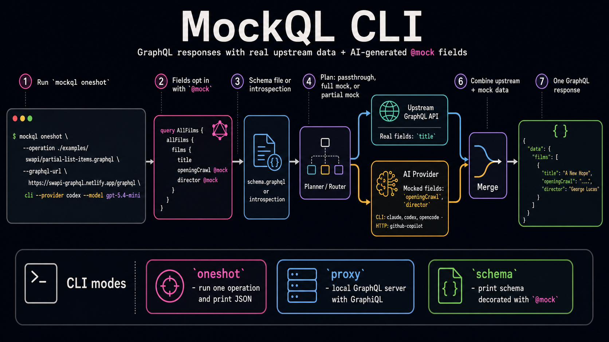

Getting Started
MockQL (mockql) executes GraphQL operations that use @mock to ask an LLM provider for mocked response data. Depending on where @mock appears, MockQL can pass the operation through unchanged, generate the full response, or merge upstream data with mocked fields.
Command Shape
mockql <oneshot|proxy> [command options] <cli|http> [provider options]
cli and http are provider transports used by oneshot and proxy. The schema command does not use a provider.
Prerequisites
Configure one provider transport before running oneshot or proxy. Provider-specific setup lives in CLI Providers and HTTP Providers.
First Run
Query
This example queries Star Wars films from SWAPI, keeps each film title from the upstream GraphQL API, and asks mockql
to generate openingCrawl and director for each film using the provided hints.
query AllFilms {
allFilms {
films {
title
openingCrawl @mock(hint: "Use the real opening crawl of the film")
director @mock(hint: "Real director of the film")
}
}
}
Command
mockql oneshot \
--operation ./examples/swapi/partial-list-items.graphql \
--graphql-url https://swapi-graphql.netlify.app/graphql \
cli --provider codex --model gpt-5.4-mini
Response
{
"data": {
"allFilms": {
"films": [
{
"title": "A New Hope",
"openingCrawl": "It is a period of civil war. Rebel spaceships, striking from a hidden base, have won their first victory against the evil Galactic Empire.",
"director": "George Lucas"
},
{
"title": "The Empire Strikes Back",
"openingCrawl": "It is a dark time for the Rebellion. Although the Death Star has been destroyed, Imperial troops have driven the Rebel forces from their hidden base.",
"director": "Irvin Kershner"
},
{
"title": "Return of the Jedi",
"openingCrawl": "Luke Skywalker has returned to his home planet of Tatooine in an attempt to rescue his friend Han Solo from the clutches.",
"director": "Richard Marquand"
},
{
"title": "The Phantom Menace",
"openingCrawl": "Turmoil has engulfed the Galactic Republic. The taxation of trade routes to outlying star systems is in dispute.",
"director": "George Lucas"
},
{
"title": "Attack of the Clones",
"openingCrawl": "There is unrest in the Galactic Senate. Several thousand solar systems have declared their intentions to leave the Republic.",
"director": "George Lucas"
},
{
"title": "Revenge of the Sith",
"openingCrawl": "War! The Republic is crumbling under attacks by the ruthless Sith Lord, Count Dooku. There are heroes on both sides.",
"director": "George Lucas"
}
]
}
},
"extensions": {
"mockResponse": {
"reasoning": "Generated opening crawls and directors for the 6 Star Wars films identified in the partial response, matching the provided hints for each list item."
}
}
}
How Does It Work?
1. Parse and validate the operation
mockql first checks that the GraphQL operation is valid and matches the schema.
2. Mock Planning
mockql scans the operation for fields annotated with @mock and collects their hints.
3. Mock Plan Execution
In this example, mockql chooses a PartialMock plan because title comes from the upstream API, while openingCrawl and director are generated.
4. Send the upstream query
mockql sends a reduced query to the upstream GraphQL API with only the non-mocked fields, such as title.
5. Prepare the prompt for the LLM provider
mockql prepares a prompt containing the mocked fields, their hints, the original query, the partial upstream response, and the relevant schema subset.
6. Merge the responses
Finally, mockql combines the upstream data with the generated mock data and returns one complete GraphQL response.

oneshot
oneshot executes one GraphQL operation and prints the JSON response to stdout.
mockql oneshot [OPTIONS] --operation <OPERATION> --graphql-url <GRAPHQL_URL> <COMMAND>
<COMMAND> is the provider transport: cli or http.
CLI Provider
Use cli when you want MockQL to call an installed assistant CLI.
mockql oneshot \
--operation ./examples/swapi/partial-list-items.graphql \
--variables ./examples/swapi/partial-list-items.json \
--graphql-url https://swapi-graphql.netlify.app/graphql \
cli --provider codex --model gpt-5.4-mini
The provider transport and provider options come after the oneshot options. CLI provider setup and defaults are documented in CLI Providers.
mockql oneshot [command options] cli --provider <provider> [provider options]
HTTP Provider
Use http when you want MockQL to call an HTTP provider.
mockql oneshot [command options] http <provider> [provider options]
HTTP provider setup, flags, and authentication are documented in HTTP Providers.
Mocking Fields Outside The Schema
Some use cases require mocking fields or types that are not part of the upstream GraphQL schema yet. MockQL supports this with GraphQL schema extensions through --schema-extension.
For example, SWAPI does not expose a productionBrief field on Film. Define the missing field and type in an extension file:
extend type Film {
productionBrief: ProductionBrief
}
type ProductionBrief {
tone: String
behindTheScenesNote: String
marketingTagline: String
}
Then select the extended field with @mock and pass the extension file to oneshot:
mockql oneshot \
--operation ./schema-extension-example.graphql \
--variables ./schema-extension-example.json \
--schema-extension ./schema-extension.graphql \
--graphql-url https://swapi-graphql.netlify.app/graphql \
cli --provider codex --model gpt-5.4-mini
Because productionBrief is not resolved by SWAPI, it should be selected with @mock.
Options
| Option | Description |
|---|---|
--operation <OPERATION> | GraphQL operation path to execute. |
--graphql-url <GRAPHQL_URL> | GraphQL server URL used for schema introspection and upstream execution. |
--schema <SCHEMA> | Optional path to a GraphQL schema file. If omitted, the schema is loaded from --graphql-url via introspection. |
--operation-name <OPERATION_NAME> | Optional operation name for documents with multiple operation definitions. |
--variables <VARIABLES> | Optional path to a JSON file containing variables for the operation. |
--schema-extension <SCHEMA_EXTENSION> | Optional path to a GraphQL schema extension file for mocking fields or types absent from the base schema. |
--graphql-header <GRAPHQL_HEADERS> | Additional headers to include in GraphQL requests. Specify as name:value; repeat the flag for multiple headers. |
--timeout <TIMEOUT> | Timeout for provider execution, e.g. 30s or 2m. Default: 1m. |
--format <FORMAT> | Serialization format for the mock response prompt. Possible values: json, toon. Default: json. |
proxy
proxy starts a GraphQL HTTP server that executes incoming operations against an upstream GraphQL server and merges the response with mock data generated by a provider.
This is ideal for interactive demos or manual testing with tools like GraphiQL, Postman or Curl.
mockql proxy [OPTIONS] --port <PORT> --graphql-url <GRAPHQL_URL> <COMMAND>
<COMMAND> is the provider transport: cli or http.
Local Server
The proxy exposes:
POST /graphqlfor GraphQL requests.GET /graphiqlandGET /for a GraphiQL interface.GET /healthfor a health check.
CLI Provider
Use cli when you want MockQL to call an installed assistant CLI. CLI provider setup and defaults are documented in CLI Providers.
mockql proxy \
--port 4000 \
--graphql-url https://swapi-graphql.netlify.app/graphql \
cli --provider codex --model gpt-5.4-mini
Open http://localhost:4000/graphiql
HTTP Provider
Use http when you want MockQL to call an HTTP provider. HTTP provider setup, flags, and authentication are documented in HTTP Providers.
mockql proxy \
--port 4000 \
--graphql-url https://swapi-graphql.netlify.app/graphql \
http <provider> [provider options]
Open http://localhost:4000/graphiql
Options
| Option | Description |
|---|---|
--port <PORT> | Port for the mock GraphQL server. |
--graphql-url <GRAPHQL_URL> | GraphQL server URL used for schema introspection and upstream execution. |
--schema <SCHEMA> | Optional path to a GraphQL schema file. If omitted, the schema is loaded from --graphql-url via introspection. |
--introspection-header <INTROSPECTION_HEADERS> | Additional headers to include in the introspection query if no local schema was provided. Specify as name:value; repeat the flag for multiple headers. |
--timeout <TIMEOUT> | Timeout for provider execution, e.g. 30s or 2m. Default: 1m. |
--format <FORMAT> | Serialization format for the mock response prompt. Possible values: json, toon. Default: json. |
schema
schema prints a GraphQL schema decorated with the @mock directive. It does not use an LLM provider.
mockql schema [OPTIONS]
From Introspection
Use --graphql-url to load the schema from a GraphQL endpoint:
mockql schema \
--graphql-url https://swapi-graphql.netlify.app/graphql
Add headers to the introspection request with --header:
mockql schema \
--graphql-url https://api.example.com/graphql \
--header "authorization:Bearer $TOKEN"
From Local SDL
Use --schema to load an SDL file:
mockql schema --schema ./schema.graphql
Minified Output
Use --minify to print Schema SDL in a token-friendly representation:
mockql schema \
--schema ./schema.graphql \
--minify
Options
| Option | Description |
|---|---|
--minify | Minify Schema SDL into a token-friendly representation. |
--schema <SCHEMA> | Path to GraphQL schema file. |
--graphql-url <GRAPHQL_URL> | GraphQL server URL used for schema introspection. |
--header <HEADERS> | Headers to include in the introspection query. Specify as name:value; repeat the flag for multiple headers. |
--timeout <TIMEOUT> | Timeout for introspection query, e.g. 30s or 2m. Default: 1m. |
CLI Providers
mockql can use installed assistant CLIs as LLM backends.
Supported Providers
claudecodexopencode
The provider executable must be installed, available on PATH, and already authenticated.
Usage
The CLI provider is selected after the flat oneshot or proxy options. The schema subcommand does not use an LLM provider.
mockql oneshot [flat options] cli --provider <claude|codex|opencode> [--model <model>]
Defaults
cli --provider claudedefaults tosonnetcli --provider codexdefaults togpt-5.4-minicli --provider opencodedefaults togithub-copilot/gemini-3-flash-preview
Security
The CLI integration runs providers in unattended automation modes. Use care when running mockql in repositories with sensitive source code, secrets, credentials, or production-adjacent configuration.
For the full provider notes, see docs/provider-cli.md.
HTTP Providers
mockql supports providers that expose an HTTP API for generating responses.
Supported Providers
github-copilotgemini
Usage
The HTTP provider is selected after the flat oneshot or proxy options. The schema subcommand does not use an LLM provider.
mockql oneshot [flat options] http github-copilot --model <model>
mockql oneshot [flat options] http gemini --url <url> --auth-header <header-name> [--auth-value-env-var <env-var>]
GitHub Copilot
mockql sends a chat-completions request to GitHub Copilot:
POST https://api.githubcopilot.com/chat/completions
Authorization: Bearer $GITHUB_TOKEN
Content-Type: application/json
If GITHUB_TOKEN is not set, mockql fails before making a request.
Gemini-compatible
mockql sends a Gemini generateContent request to the provided URL:
POST <url>
<auth-header>: $<auth-value-env-var>
Content-Type: application/json
--auth-value-env-var defaults to GEMINI_AUTH_VALUE. For Google Gemini API, set the configured auth token environment variable to the API key and use --auth-header x-goog-api-key. For bearer-compatible endpoints, set the configured auth token environment variable to the full value, for example Bearer <token>, and use --auth-header Authorization.
Security
HTTP provider credentials are sent over HTTPS. Treat them like any other API credential. Do not commit them to source control or expose them in CI logs.
For the full provider notes, see docs/provider-http.md.
@mock Directive
@mock marks a GraphQL operation or field for AI-generated mock data.
directive @mock(hint: String) on QUERY | MUTATION | FIELD
Locations
@mock is valid on:
- Query operation definitions
- Mutation operation definitions
- Field selections
@mock is not valid on fragment spreads, fragment definitions, inline fragments, or introspection fields.
Operation-Level Mocking
When @mock is applied to an operation definition, the entire response is generated by the configured LLM provider.
query GetInfo @mock(hint: "test data for development") {
me {
id
name
}
}
Field-Level Mocking
When @mock is applied to a field, that field and its full selection subtree are generated by the configured LLM provider.
query {
me @mock(hint: "return a user named Alice") {
id
name
}
}
Partial Mocking
When some fields are mocked and others are not, mockql fetches real upstream data for the non-mocked fields, generates mocked data for mocked fields, and merges the results.
query {
topProducts(first: 5) {
upc
name
reviews @mock(hint: "positive reviews from verified buyers") {
id
body
}
}
}
For the full working specification, see the repository source docs at docs/mock-specification.md.